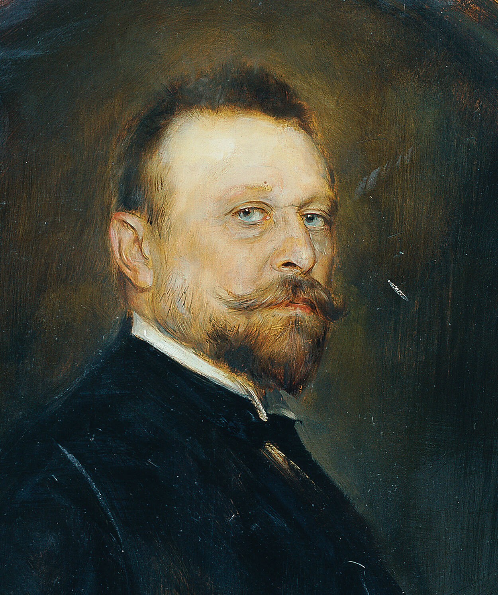
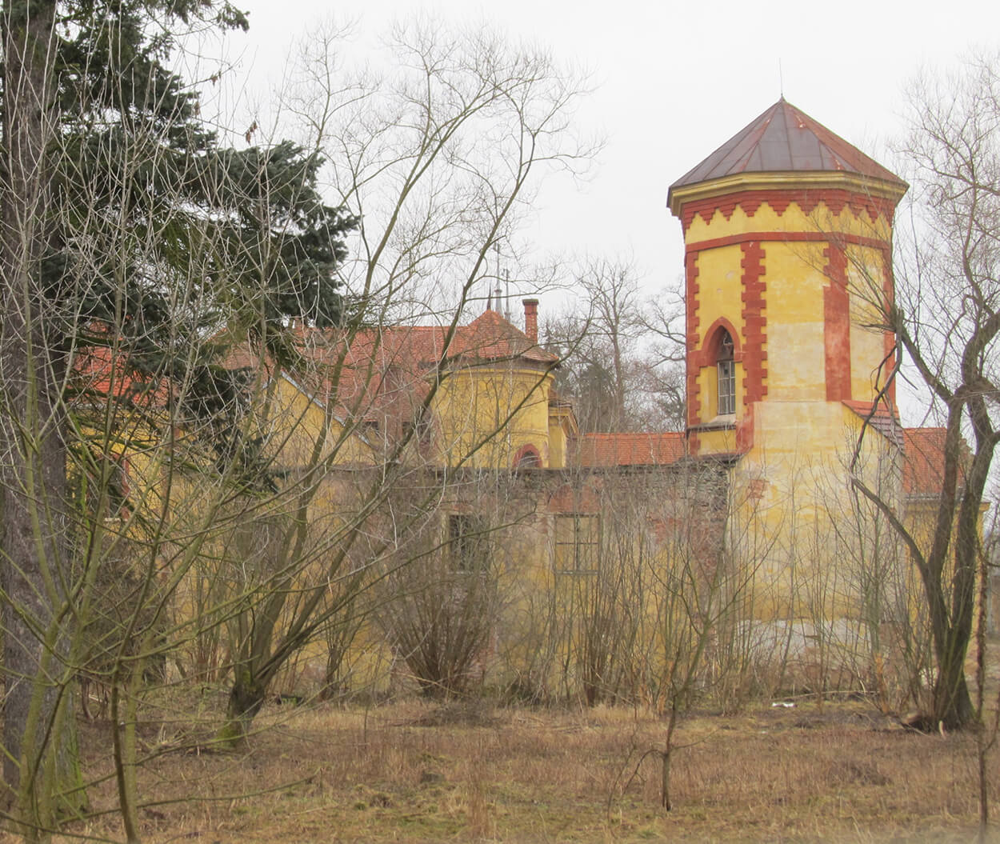

Biographie Joseph Maria Baernreither
Joseph Maria Baernreither wurde am 12. April 1845 in Prag als Sohn eines aus Wien stammenden Rübenzuckerfabrikanten und später im nordwestböhmischen Lünz begüterten Großgrundbesitzers geboren.
 Jurist im Justizministerium
Nach Absolvierung des Prager Kleinseitner Gymnasiums studierte er Rechtswissenschaften an den Universitäten in Heidelberg und Prag, wo er 1871 zum Doktor beider Rechte promovierte. Seine weitere juristische Ausbildung absolvierte er zunächst am Prager Handelsgericht und ab 1873 am Landesgericht für Zivilsachen, wo er die Richteramtsprüfung ablegte. Hier erregte die Frage des umständlichen schriftlichen Prozessverfahrens seine Aufmerksamkeit. 1873 unternahm er eine Reise nach Genf, Hannover und Celle, um das moderne mündliche Prozessverfahren praktisch zu studieren – auch in der Absicht, sich mit einer Arbeit über den Zivilprozess zu habilitieren. Mittlerweile nach Reichenberg als provisorischer Gerichtsadjunkt versetzt, veröffentlichte er 1874 seine Betrachtungen über die Genfer Prozessordnung in mehreren Artikeln in der „Allgemeinen österreichischen Gerichtszeitung“. Im Jänner 1875 wurde er zur Beratung des von Philipp von Harrasowsky entworfenen Zivilprozessentwurfes ins Justizministerium berufen und blieb dort, zuletzt als Ministerialsekretär, bis 1885. Um sich gänzlich der Politik und seinen Studien widmen zu können, schied er 1887 aus dem Staatsdienst als Landesgerichtsrat extra statum aus.
Landtags- und Reichsratsabgeordneter
Bereits 1878 trat Baernreither in die aktive Politik ein, als er als Abgeordneter des Großgrundgrundbesitzes in den Böhmischen Landtag gewählt wurde. Diesem gehörte er bis 1883 und dann erneut von 1901 bis 1913 an. 1885 gelang ihm der Einzug in das Abgeordnetenhaus des österreichischen Reichsrats, wo er zunächst der Vereinigten Deutschen Linken, dann der von ihm mitbegründeten Partei des Verfassungstreuen Großgrundbesitzes angehörte. Bei den ersten Wahlen nach dem neuen allgemeinen (Männer-) Wahlrecht 1907 unterlag er seinem alldeutschen Konkurrenten, wurde aber kurz darauf zum lebenslänglichen Mitglied des Herrenhauses ernannt, wo er sich der Verfassungstreuen Linken anschloss.
Sozialpolitiker
Seine sozialpolitischen Interessen, denen er in den frühen 1880er Jahren in intensiven Studien in Westeuropa, besonders in England nachging, prägten Baernreither als Sozialliberalen im Umfeld der „Kathedersozialisten“ um Lujo Brentano. 1886 erschien sein Werk „Die englischen Arbeiterverbände und ihr Recht“. Im Abgeordnetenhaus engagierte er sich im Besonderen für den Ausbau des Sozialversicherungswesens. Seine Expertise hinsichtlich des Zivilprozessverfahrens konnte er ab 1893 als Berichterstatter des Abgeordnetenhauses bei der parlamentarischen Behandlung der von Franz Klein entworfenen Reform des Zivilprozesses einbringen. Nach dreijähriger Beratung wurde der Gesetzesentwurf 1896 vom Parlament verabschiedet. Baernreithers Ansehen als Sachpolitiker war damit gesichert und er als „ministrabel“ anerkannt.
Österreichischer Handelsminister 1898
So wurde er auch im März 1898 als Handelsminister in das Kabinett des Grafen Franz Thun-Hohenstein berufen. In seiner kurzen Amtstätigkeit – er trat bereits im Oktober desselben Jahres zurück – konnte er sozialpolitisch relevante Akzente in seinem Ressort setzen: So wurde über den Verordnungsweg das „Arbeitsstatistische Amt“ als Forschungsstätte am Handelsministerium eingerichtet, das objektive Daten für sozialpolitische Fragestellungen ermitteln sollte (geleitet von Viktor Mataja); mit dem damit verbundenen „Arbeitsbeirat“ und dem „Industrierat“ schuf Baernreither Vorformen des später als „Sozialpartnerschaft“ bezeichneten Interessensausgleichs zwischen Arbeitnehmern und Arbeitgebern. Ludwig Brügel würdigte Baernreither 1919 als einen der „ersten praktischen Sozialpolitiker Österreichs“.
Kinderschutz und Jugendfürsorge
Ab der Jahrhundertwende widmete Baernreither seine Arbeitskraft neben den Ausgleichsbemühungen zwischen Deutschen und Tschechen besonders den Fragen der Jugendfürsorge und der Ausbildung eines modernen Jugendstrafrechtes. Dazu unternahm er Studienreisen nach Westeuropa und die USA. Letztere verarbeitete er 1906 in seinem Buch „Jugendfürsorge und Jugendstrafrecht in den Vereinigten Staaten von Amerika“. Um eine Verbesserung der staatlichen Einrichtungen in Österreich voranzutreiben, engagierte sich Baernreither für eine umfassende Enquete, die im ersten österreichischen Kinderschutzkongress 1907 in Salzburg zusammentrat. Um die aufgezeigten Ziele zu akkordieren, wurde zugleich eine „Zentralstelle für Kinderschutz und Jugendfürsorge“ gegründet, die als Verein im Handelsministerium in enger Verbindung zur Sozialpolitischen Sektion und dem Arbeitsstatistischen Amt angesiedelt wurde. Baernreither fungierte bis 1923 als ihr Präsident und Herausgeber der „Zeitschrift der Zentralstelle für Kinderschutz und Jugendfürsorge“.
Erster Weltkrieg
Als Mitglied des österreichischen Herrenhauses wirkte Baernreither für einen Ausgleich zwischen den Deutschen und Tschechen in Böhmen und als ständiges Mitglied der Delegationen für eine Konsolidierung des dualistischen Reiches. Die kulturelle und politische Entwicklung Bosnien-Herzegowinas und der Kontakt gerade auch zu serbischen Politikern sollten der Verständigung mit dem Ballhausplatz und dem Erhalt des Friedens auf der Balkanhalbinsel dienen. In seinen Tagebüchern finden sich keine Hinweise auf die sonst vorherrschende Kriegsbegeisterung im Sommer 1914, sondern Entsetzen über die leichtfertige und unheilvolle Politik. Während der ersten Kriegsjahre trat er für enge Verbindung mit Deutschland ein, vor allem im Zusammenhang mit Friedrich Naumanns Mitteleuropa-Idee, die in einem Kreis um Baernreither und Gustav Marchet in Zusammenkünften diskutiert wurde.
Ministerium für Volksgesundheit und soziale Fürsorge
Im Dezember 1916 wurde er von Kaiser Karl als Minister ohne Portefeuille in das Kabinett von Graf Heinrich Clam-Martinic berufen, um die Organisation eines Ministeriums für Volksgesundheit und soziale Fürsorge zu entwerfen. Noch bevor er dem Kaiser seinen Entwurf persönlich vorlegen konnte, demissionierte das Kabinett im Juni 1917, sein Entwurf bildete jedoch die Grundlage für die künftige Organisation der dann für soziale Fürsorge und für Volksgesundheit 1918 eingerichteten Ministerien.
Baernreither wurde am 19.12.1918 zum Bevollmächtigten der Republik Deutschösterreich bei der königlich niederländischen Regierung ernannt, konnte aber das Amt wegen gesundheitlicher Probleme nicht antreten. Baernreither war unverheiratet und starb ohne Nachkommen am 19. September 1925 während eines Kuraufenthaltes in Teplitz (Teplice).